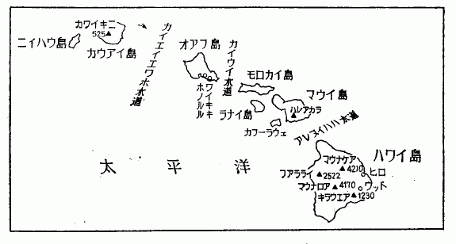

遠い遠い昔のこと、もちろん人間などまだ地球上に現れなかった時代、おそらく数千万年もの大昔に、太平洋の深海の底に、大きい
その亀裂は、現在のハワイ群島の東方に始まり、それからずっと西方に伸びて、ミッドウェイ島を通り、日本の南方近くにまで達した。そしてその亀裂に沿って、海底のずっと下にある熔岩が、ところどころから噴き出してきた。
これらは深海の底にできた火山であって、噴火の時は、もの
こういう海底噴火は、現地質時代でも時々発生するので、先年の
今日のハワイ群島は、大小数十の島から成り、そのうちの比較的大きいものだけでも、八つの島がある。これらの群島は、いずれも太平洋の底にできた地殻の割れ目に沿って、噴火してきたものであるが、一気に島ができたのではない。数千万年か数百万年かの長い年代にわたって、何回もの海底噴火があり、水面下でなんべんも起伏をくり返しながら、やがて海面にその姿を現わしてきたのである。そしてたくさんあるハワイの火山の中には、現在でも、この地球創成の
ハワイといえば、すぐホノルルと思われやすいが、ホノルルのあるのは、オアフ島であって、これは群島中第三位の大きさの島である。もっともこのオアフ島は、真珠湾のある島であって、われわれには、因縁の深いところである。

群島の主な島は、オアフ島よりも東方にあって、その一番東にあるハワイ島が、とりわけ大きい島である。四国の三分の二くらいの広さで、ここにマウナ・ロアとマウナ・ケアという二つの火山がある。両方とも約一万三千七百フィートあって、ほとんど同じ高さである。ハワイに、富士山よりも一千フィート以上も高い山があるというと、ちょっと驚く人が多い。緯度は台湾の南部くらい、熱帯に属しているが、この高山の頂では冬になると、雪が降る。普通の年は、一冬に四、五回雪が降るので、その雪を調べるために、昨年の十二月から、今年の一月にかけて、約二カ月を、マウナ・ロアの山頂で暮した。そして地球創成の面影を残しているこの火山の景観を、十分味わう機会を得た。
マウナ・ロアは、キャプテン・クックが、南太平洋の長い航路の末、遥かに雲上にこの山頂を認めて、今日のハワイ島を発見したと伝えられている。そのクックが、土人との戦いに
クックの伝説からは、何だか
ハワイの火山、とくにマウナ・ロアは、世界にも類例の少ないおだやかな火山である。今でも時々噴火をするが、
こういう熔岩の流出のくりかえしでできた山であるから、なだらかな形になるのも当然である。そしてこの噴火は現在も時々起るので、過去百年間に山頂近くから十五、六回も熔岩が流れだしている。いちばん新しい大噴火は、一九五〇年に起り、これは熔岩流が海にまで達した。一昨年のプナの噴火は、山裾の畑の中から起り、人家がだいぶ熔岩流に
マウナ・ロアは、こういう新しい熔岩の山であるから、中腹から上は全山熔岩で埋められ、まったく生物のいないところになっている。動物はもちろんのこと木も草もぜんぜん生えていない。一本の雑草もなく、
もっとも黒いといっても、全部一色の黒ではない。熔岩の種類により、また流出年代によって、褐色、黄泥、薄緑などを基調にもった各種の黒の入り雑った模様が、熔岩流によって織り出されている。この景観に一層の妖気を添えるものは、真赤な口を開いた小噴火丘である。山腹のところどころに、シンダー・コーンと呼ばれる小さい旧噴火丘がある。空中に噴出された熔岩が、急冷されて
十二月の二日に羽田を立ち、五日にハワイ島の主都ヒロへ着いた。そして七日に約一トンの機材を、二台の大型ジープに積みこんで、マウナ・ロア
この黒い月の世界の中に、あんがいによい道路が、ずっと続いている。熔岩を粉砕して、
この山の熔岩は、大別して、二種類に分けられる。一つは「パホエホエ」と呼ばれ、いま一つは「アア」という。ともに原住民カナカの言葉である。パホエホエは、表面がガラス状に光った熔岩で、水飴が流れる途中、そのまま固まったと思えばよい。たいてい表面に縄状の縞模様があって、固化する直前の熔岩の流れ方をはっきり示している。アアのほうは、黒褐色の軽石が岩塊状になったものである。岩塊の縁は、鋭く
パホエホエとアアとは、入り乱れて、どこまでも続いている。こういう熔岩の流れが、恐ろしい勢いで、山腹を埋めながら流下する姿を頭に描きながら、二十マイルばかり走ると、マウナ・ロア観測所が、遥かな稜線の上に、点のように見えてくる。この観測所は、昨年の夏、米国気象台の手で建てられたものである。標高は、一万一千百フィート。ここがわれわれの基地になるところである。この観測所に居住しながら、降雪の予報を待って、山頂へ出かけていき、雪の結晶の顕微鏡写真をとろうという計画なのである。
山頂に近い一万三千四百フィートのところには、六畳間にもたりない小さい小屋があって、そこが仕事場である。しかしこれは四方の板壁と屋根とがあるだけで、木の箱といったほうがよいくらいのものである。水も暖房もベッドも何もない。とうてい人間の住めない施設であって、またそのつもりで造ったものでもない。気象自記器を置くために建てたのであるが、それもまだ実行はされていない。建ててから五年以上になるが、まだ使ったことがない建物である。
観測所のほうは、コンクリート・ブロックのりっぱな建物で、中央の広い仕事部屋のほかに、寝室が三つと台所とがある。台所は冷蔵庫も、ガスレンジも設けてあって、申しぶんなくできている。電気は自家用発電機、暖房と炊事はプロパンガス、水は雨水を使う。ところが、こんなりっぱな施設ができたのに、今までほとんど利用されていなかったそうである。ここに寝泊りするのは、われわれが初めてという話であった。
一行は、菅谷博士と、荘田博士と、私との三人である。案内の気象台の人が下山してからは、三十マイル四方に、植物も含めて生命のあるものは、われわれ三人切りという生活が始まったのである。
観測所のある山稜は、今一つの高山、一万三千七百フィートのマウナ・ケアとちょうど
この鞍部地帯は、右も左も、きわめて、なだらかに、遥かなる海岸線にまでくだっている。右のほうには遠くヒロの町が見える。しかし本当にこの町が見えることは、めったになく、たいていの場合は、下層雲が海岸付近を厚く
この下層雲は、季節風に乗って、鞍部地帯へ上ってくるが、雲の高さは、普通だいたい六千フィートくらいにきまっているので、この熔岩の原全体をおおうことはめったにない。マウナ・ケアは、いつでも、山裾にこの下層雲を
こういう場所をわざわざ選んできたのは、この空気がきれいだという点にあった。もっと端的にいえば、こういう空気のきれいなところに降る雪の形を調べにきたのである。私たちの雪の研究も、もう二十五年の年月をかけたが、今までに得られた結果は、天然に見られる各種の結晶を、人工的に低温室の中で作れるようになった、というだけのことである。それでわかったことは、結晶の形は、できる時の気温と、水蒸気の過飽和度と、この二つの要素できまるという点であった。とにかく註文に応じて、望みの結晶が、人工的にできるようになったので、一応は問題がかたづいたとして、一安心していた。
ところがその後、電子顕微鏡を使って、雪の結晶の核を調べだしたら、いろいろ腑に落ちないことが出てきた。そしてさんざん探したあげく、どうも気温と過飽和度との外に、いま一つ隠された要素があって、それが二次的に、結晶形を支配しているらしいということになった。そしてこの隠された要素が、どうも大気中の極微な
塵といっても、非常に小さいもので、顕微鏡ではもちろん見えず、電子顕微鏡でも、やっと見えるか見えないかという程度である。このうちのごく小さいものは、直径が一ミリの百万分の一程度であって、塵というよりも、分子の集まりといったほうがいいくらいのものである。こういう微粒子が、大気中にたくさんあることは、前から気象学のほうではわかっていたので、
この凝結核が
ところできてみると、なるほど
雪は今までの記録では、一冬に四、五回降るはずで、そのうちの二回くらいつかまえられれば、十分に目的が果たされる。下界のワイキキの浜では、海水浴をしているのに、私たちは、この山頂で雪を待つわけである。十一月の末、かなりの降雪があって、マウナ・ケアの山頂には、その雪が白く残っている。
ところで、十二月七日に登山して以来、連日の快晴で、空には一点の雲もない日が毎日つづいた。マウナ・ロアの山頂のほうに向かうと、褐色のアアの荒野の中に、パホエホエの黒い流れが、幾筋もうねうねと横たわっている。反対側、マウナ・ケアは、鞍部地帯を半ばおおっている下層雲の上に、赤味を帯びた紫の岩肌を見せて、高々と聳えている。その左には、雲上遥かに、一万フィートのハレアカラが、薄藍色にその姿を見せている。木も草もない、この黒い月の世界では、風のない日は、音一つ聞えない。大気は澄みきっていて、雲ひとつない青空に、太陽だけが白く輝いている。
この人界を離れた世界では、いかにもこの世界にふさわしい現象が起る。その中でも、一番美しいのは、大空にうつる山の影である。大地にうつる山の影とか、雲にうつる山の影とかいうものならば、そう珍しくないが、ここでは、山の影が空にうつるのである。日が落ちて行くと、まず鞍部地帯からかげり始めて、その影が、次第にマウナ・ケアの山腹をはい上っていく。日はもう山稜のかなたに落ちているので、西の空だけが、
その頃になると、晴れ渡った東の空に、ふしぎな現象が起きる。地平線に近いところは、薄い橙色に染まり、それが青磁色の空にぼかしたように溶けこんでいる。その橙色が、次第にうすれていくうちに、いつの間にか、くっきりと藍色の山の影が現れてくる。これはマウナ・ロアの影であって、影の頂が、ちょうど山頂から見た水平線のところにできる。マウナ・ロアの
大空にうつる山の影の物理的説明などは、どうでもよいが、人間の住んでいないところでは、夕闇の静寂のひとときの間に、こういう妖しくも美しい現象が起きているのである。この影は、麓にあたる部分から、次第にせりあがってきて、やがて東の水平線一帯が、藍色に染まり、間もなくマウナ・ロアの夜がやってくる。
これと同じ現象は、夜明けにも見られる。順序は日没の時とちょうど逆で、西の空にできた山の影は、日がのぼるにつれて、影の頂の部分からくだってきて、やがて清浄な朝の空にかわって行く。
この土地では、夜明けの日の出るまえと、日没後の夕闇の時期とに、いろいろな形の高層雲がよく見られる。もっとも明るいのは、いずれの場合も地平線の近くだけであるから、遠い雲すなわち地平線の近くに見える雲でないと、写真にはうつらない。しかしそういう遠い雲は、大気が非常によく澄んでいないと見えないので、普通の土地では、この研究ができない。今まで雲の研究は、ずいぶんよくなされているが、この夜明けあるいは夕闇にできる高層雲の研究は、まだほとんど手がつけられていない。写真にとれないことが、いちばんの原因である。
ところが、このマウナ・ロア観測所は、その目的には、まったくお誂えむきのところである。ほとんどいつでも下層雲の上に出ていて、しかも空気のきれいなことは、世界第一という場所である。実は雪の降らない場合のことも考えて、この雲の研究のことを、あらかじめシェファー博士と打ち合わせておいた。シェファー博士といえば、人工降雨の実験を最初に試みた人として、日本にもよく知られている学者である。現在は、ムニタルプ Munitalp 協会の研究所長をしているが、この奇妙な名前の協会は、その名のごとく、いかにも奇妙な協会である。ムニタルプというのは
シェファーは、いかにも、この協会には、うってつけの男である。現在は、自分の家に、研究室を建て増して、そこで女房と二人で、ジェット気流の研究をしている。もう少し役にたたない研究をやったら、見あげたものであるが、アメリカとしては、これでも上等なほうであろう。もっとも彼のジェット気流の研究というのは、やはりいっぷう変っていて、雲の形から、ジェット気流の存在を見つけようというのである。
ジェット気流というのは、対流圏の上層部、非常に高いところにある気流である。この気流は、比較的細い筋になっていて、非常な高速で、西から東へ流れている。日本からアメリカへいく飛行機は、この気流に乗ると、びっくりするほど早く着くのである。それでパンアメリカンをはじめ、多くの航空会社では、このジェット気流の調査をよくやっている。気象台でも、もちろんこの研究をやっているのであるが、局所的なもので、また、しじゅう位置も高度も変化しているので、その予報はなかなかむつかしい。
それでシェファー博士は、高層雲の形から、このジェット気流の位置を見つけることができはしないかと考えついた。それでいろいろな雲の動きを、微速度映画にとって研究する仕事を四年くらい前から始めた。高く澄んだ秋空に、白い巻雲が、白絹の束を
雪が降る日は、多く見つもっても、滞在期間中の三分の一か、四分の一くらいとして計画を立てた。雪を待っている間の仕事としては、この高層雲の研究が、場所柄として、一番適していそうである。それで出発前にシェファー博士に相談してみたら、大賛成である。すぐ微速度映画カメラを二台と、十六ミリの天然色フィルムを、三千フィート送ってくれた。
この撮影は、しかしあまり楽な仕事ではない。夜明け前と、日没後の撮影であるから、絞りをうんとあけて、長い露出をする必要がある。しかもこの時期では、空の明かるさが、刻々に変化するので、それに合わせて、露出をつぎつぎと変えて行かなければならない。日の出の五十分くらい前から東の地平線の空が、少し明かるくなりかける。そのころから撮影を開始するわけであるが、周囲は真暗で、風は寒い。全天には、まだ星が残っていて、空は全くの夜の色である。ただ東の空が、青磁色に少し明かるくなっているだけである。この時期は、一・九のレンズを開放にして、六秒間というとんでもない長い露出をする。ところがまだ幾フィートも廻さないうちに、どんどん空は明かるくなる。地平線上の青磁色が橙色にかわり、次第に
六秒の露出をするというと、特殊のカメラが必要なので、シェファーの考案による新しいカメラと、いま一つは普通の微速度カメラと、二つを送ってきた。
日の出前の撮影は、六時頃から始めるが、そのころは周囲はまだ真暗で、東の地平線だけが、
ところでこの微速度撮影のほかに、今ひとつ菅谷君が、その威力を発揮すべき場面がある。それは、観測所から山頂小屋までの悪路の征服と、山頂小屋の整備とである。この二つの基地は、高度差は二千三百フィートしかないが、距離にしては、八・九マイルある。この八・九マイルは、熔岩の岩原の上に、ブルドーザーを一度通した程度の道で、大型ジープでも、並みたいていの腕では征服できない。とくにアアを砕いた砂利道で急勾配のところが、いちばんの難所である。いわば軽石の砂利であるから、いちどスリップを始めると、いくら馬力をかけても、車輪がどんどんめりこむだけである。まあ雪道と思えば間違いない。スリップを始めると、四輪ともに最低のギアにして、思い切りアクセルを踏んで、ハンドルを左右に繰り返し切りかえる。そのうちに少し大きい岩塊をかんで、やっと登れることもある。その代りタイヤは、アアの鋭い
最初に観測機械や居住の機具類、酸素のボンベなどを頂上へ運んだ時は、気象台の四輪トラックをたのんだ。この時は、さすがに五年間もの経験がある人たちだったので、無事たどりついた。しかし二、三日して、私たちだけが出かけたら、さっそく動きがとれなくなった。荘田君を観測所に残し、念のために、携帯用無線電話器（ウォーキー・トーキー）をもって、菅谷君と二人で出かけたが、この無電器が、すぐ役に立つことになってしまった。観測所から三マイルくらいの間が、いちばんひどいので、その間に難所が三つばかりある。一つはどうにか切り抜けたが、二つ目はもういけない。さんざん無理をしているうちに、とうとうエンジンが始動しなくなった。電池も弱ってしまったし、それに燃料ポンプも、この高度では、能力の限界を越しているらしい。見渡すかぎりは、四方とも真黒の熔岩の岩原で、いちばん近い隣家は、二十マイル下のクラニ監獄である。因果なことには、風もない快晴の日で、空には雲一つない。マウナ・ケアは相かわらず美しい山容を見せて、沈黙の世界に
とうとう無電器のご厄介になって、観測所の荘田君を呼びだすことにした。さいわい連絡がとれたので、観測所からヒロの気象台へ、無電で救援を頼んでくれた。しかしヒロからやってくるのはたいへんなので、隣家のクラニ監獄から、救援にきてくれることになった。この連絡が大騒ぎなのである。まず気象台から、ヒロの警察へ市街電話で連絡する。警察とクラニ監獄との間には、別の無電がある。この三段の連絡がうまくとれて、クラニの監獄から、
道の悪さに比例して、景色もまた
観測所から頂上までのちょうど半分くらいのところに、赤噴火丘（レッド・シンダーコーン）という
もっともこういう噴火丘は、この間だけでも何十とあって、その小さいものはたいてい、三つとか五つとかが一組になって、一列に並んでいる。地下の熔岩が、非常な圧力でのしあがってきて、この岩の山に亀裂を生じさせる。そしてその割れ目に沿って、数カ所から熔岩のしぶきを噴出させたのであろう。天地創造の名残りをとどめているこのあたりの景観は、まことに恐ろしい眺めである。
赤噴火丘を過ぎるころから、パホエホエの色が、きわだって美しさを増す。黒い熔岩の原ではあるが、その黒さはけっして一色ではない。熔岩流の系統によって、基調の色が、それぞれにちがう。いちばん美しいのは、青みを帯びた系統で、ごく上等の青墨を少しうすめた時のような色をしている。空気が澄み、日射が強いので、日差しの方向によっては、真珠貝の内側のように輝いてみえることもある。
これに劣らぬ美しい熔岩は、緑系統のものである。このほうは少し黒みが強いので、直射日光の下でないと、ほんとうの色は見わけにくい。しかしこの場所で、白日の光の中では、非常に美しい色を見せている。真暗な深海の底にとどく緑の光を思わせるような色である。そのほかにも、黄泥色を基調にもった黒、褐色を帯びた黒など、いろいろな系統の熔岩の流れが、見渡すかぎりの岩原を埋めつくしている。ものすさまじい景色ではあるが、なんとなく底に親しみのある色をしている。
もっとも考えかたによっては、そういう感じがあっても、あまりふしぎではない。この熔岩の一片をとって、つくづくとその色に見いった時に、最初に頭に浮んだのは、
備前焼の色が、何で出るかは知らないが、鉄分がおもな役割をしているのではないかと思う。マウナ・ロアの熔岩は、鉄分をたくさん含んでいて、酸化鉄として十一パーセントもある。酸化鉄には、第一と第二と両者あって、一方は
備前焼の話もおもしろいが、ハワイへ陶器の研究にきたわけではないから、先を急ごう。
赤噴火丘を過ぎ、微妙な色の諧調をもったパホエホエの原を一マイルばかり行くと、右手に「月の山」が見え始め、まもなく「玉門関」にかかる。月の山は、そう高くない山稜であるが、傾斜が急なために、ひどく聳え立って見える。恐ろしい形の山で、稜線が
急勾配の坂道を、ジープはあえぎながら、やっとの思いでよじ登る。登りきったところで、視界がひらけたかと思うと、突如として、この奇怪な山稜が、真黒に眼の前に現れる。人界を遠く離れたこの世界の中でも、とくにワイヤード（weird）な景色である。誰いうとなく、月の山という名前がついた。
山頂への道は、この月の山を廻って行く恰好になっているが、ちょうどこの山稜を出はずれたところに、
玉門関を出ると、まもなく、この世界での西域にはいる。山頂の台地にとりついたので、周囲が急に開けてくる。遥かなる台地の果には、山頂小屋が、岩盤の上に、小さい点のように望まれる。左手は、遠くヒロの町までつづく広漠たる熔岩の山腹である。パホエホエとアアとが、いろいろな色に入り乱れ、
これらの熔岩も、噴火丘も、まだ新しいもので、多くは一八五〇年代から、一九四二年にかけて、
生きている地球の姿を詳細に見るには、噴火丘の中にはいってみるのが、いちばんの早道である。噴火丘をつくっている
こういう時には、菅谷君にかぎるので、地質用のハンマーを片手に、さっさとおりて行く。そのあとについて、おそるおそるおりてみると、足場はいろいろな出張りがあるので、そうむつかしくはない。ただ孔が横にそれて、
しかしここまではいってみると、いろいろな珍しい現象が見られる。第一が、熔岩の鍾乳石であって、天井から乳房のような形になって、熔岩のつららがたくさん垂れている。恐ろしい圧力で、熔融している熔岩を噴き出し、その表面が少し固まった頃、内部の圧力が減ると、残りの熔岩が再び地下に吸いとられて、この孔ができる。その直後は、孔の壁はまだなかば熔けた状態にある。そしてそれが冷えきるまでには、たくさんの乳房が
おもしろいのは、これらの「鍾乳石」や「石筍」の色である。パホエホエと同じ成分のはずなのに、黒色のものは、ほとんどない。黄褐色、小豆色、赤褐色、黄緑色など、いろいろな色があるが、いずれも落着いた美しい色であって、単純な絵の具の色ではない。噴火孔の壁も同様であって、遠くから見ると、真赤な口を開いたように見えるが、中にはいってよく見ると、赤を基調として、その中に千差万別の色がはいっている。噴火孔の端のところは、熔岩が
噴火丘ばかりでなく、こういう洞窟は、じつはパホエホエの岩原一面にあるのである。それはここでは熔岩洞（ラヴァ・チューブ）といわれている。パホエホエの流れが少し冷えてくると、まず外側が固化する。しかし内部の熔融した部分はどこか突破口を見つけると、そのほうへ流れだしてしまう。それで厚さ二インチか三インチの熔岩の殻だけが残って、内部は
熔岩洞の中をたどっていくと、時々少し広まったところがあり、そういうところには、よく火山灰がたまっている。天井は熔岩のドームであり、下は火山灰の床である。光はほの暗く、休息には絶好の場所である。柔らかい火山灰の上に腰をおろし、足を投げだして、しばらくじっとしていると、あまりのしずけさに、どこか別の世界へ引きこまれそうな気がしてくる。
眼が馴れてきて、よく見ると、火山灰の中に、細い銀線のように光る筋が、たくさん見える。「ペレの髪」である。ペレス・ヘアといえば、火山学の教科書には、必ず出ているくらい、非常に珍しい標本である。世界中で、マウナ・ロアとほかに一カ所、たしかヴェスヴィアスだけに見られるもので、他の火山にはほとんどない。熔岩がガスの力で激しく噴きだされる時にできる「ガラス繊維」なのである。ガラスを融かして、急激にひくと、細いガラスの繊維ができる。あれとまったく同じことが、天然に起きて、熔岩の糸がとび散ったものが、このペレの髪なのである。それで熔岩がガラスのような性質をもっていて、流動性の大きい場合でないと、このペレの髪はできない。
ペレというのは、カナカの土人が信じている火山の女神である。地下の王国に住んでいるこの女神は、非常に
噴火の週期からいえば、もうそろそろ山頂近くから、新しい熔岩が流れだし、方々で噴火孔が口を開き、熔岩のしぶきを噴きあげてもよい時期である。マウナ・ロアの山裾にあるキラウエアの火山研究所では、所長イートン博士が、地震観測による噴火の予報の研究をしている。滞在中にいちどこの研究所を訪ねたが、イートン博士は、「あの観測所は、位置をうまく選定してあるので、新しい噴火が起きても、あの建物が熔岩流に呑まれることは、たぶんないでしょう」といって、すましていた。そして道路のほうは、熔岩流で断ちきられることはあるだろうがとつけ加えてくれた。
山頂小屋は、もともと宿泊の目的で建てられたものではないので、防寒のことは、ぜんぜん考えてない。板を一枚張っただけの壁は、隙間風が通り放題である。それに一万三千フィート以上になると、酸素不足のために、寒さが平地の倍くらいもこたえる。酸素のボンベは運んであるが、仕事を始めると、なかなか落着いて酸素を吸っているひまはない。私は簡単に陥落して、とうとう一晩も泊らなかったが、菅谷君は、通計一週間ばかり泊りこんで、小屋の内部を、天井も四方の壁も、全部テックスで張りつめて、やっと住めるようにした。小型発電機の設置もすみ、戸外に顕微鏡写真装置のための蔽いもつくった。顕微鏡写真は、戸外でないと寒さが足りないからである。
用意は万端ととのって、いつ雪がきてもだいじょうぶということになったのであるが、そのかんじんの雪が、ちっとも降ってくれない。十二月十五日と一月六日とに、ほんのわずかばかり雪が降ったが、写真が二、三枚とれた程度である。あとは毎日雲一つない青空で、これにはどうにも手のうちようがない。数年前に、
そのために雲の微速度撮影を計画したのであるが、これは日の出前と日没後の仕事が多いので、それだけだと、昼間がまるであいてしまうことになる。それで少し欲ばるようであるが、雪の降らない日の昼間は、凝結核の研究をすることにした。これは
凝結核というのは、前にもいったように、半径が一ミリの百万分の一程度という、恐ろしく小さい粒子である。こういう小さい粒子が、われわれの地球をとりまく大気の中では、あんがいに大きい役目をしている。第一に雲や霧ができるのは、この凝結核があるからである。気象学というのは、一面から見ると、大気中に於ける水分の変態の学問といってもよい。雲や雨がなかったら、天気予報もいらないし、台風の
雲の問題のほかにも、もっと身近で、緊急を要する問題がある。それは、スモッグと凝結核との関係である。この数年来、東京の街は、冬になると濃いスモッグに蔽われる日が多くなり、保健衛生の面で、重大問題になりつつある。札幌のように、家ごとにストーヴを焚いている街では、冬じゅう人々はスモッグの中で住んでいるといってよい。冬の夕方など、少し小高いところから、札幌の街を見渡すと、低くたれこめた濃い鼠色の霧の下に、街はすっかり隠されている。われわれは泥水の中に棲んでいる
しかしスモッグと煤煙とは、厳密にいえば、別のもので、煤煙をなくしても、スモッグは残る。もちろん以前よりはよほど良くなることは確かであるが、スモッグ自身は、それだけではなくならない。スモッグの原因は、燃焼による凝結核の生成にあるからである。もっともそういうことがわかったのは、ごく最近のことである。従来は煙突から煙を出さないことばかりやかましく言っていたが、煤煙を防止したら、スモッグが、完全になくなるかというと、そうはいかない。スモッグのほんとうの原因は、どうも過酸化窒素にあるらしい。燃焼によって、酸素と窒素とが化合して、酸化窒素ができる。これは太陽光線中の紫外線によって、過酸化窒素にかわる。この過酸化窒素は、そのガスだけだと、茶褐色の気体である。ところでこのガスの分子、または分子の集合が、凝結核となって、スモッグをつくるらしい。従来は、オゾーンが重視されていたが、そのほかにこの過酸化窒素も、有力な犯人のようである。これが最近の研究の結果である。もしそれがほんとうとしたら、ものを燃すこと自身が、大気汚染の原因ということになる。それだと、文明の進歩とスモッグとは、切り離せないことになるであろう。ものを燃すことをやめるわけにはいかないからである。それでアメリカでも、いささかお手あげの形になっている。
スモッグの問題では、日本はまだ恵まれているほうで、いちばんその被害を痛感しているのは、ロスアンゼルスである。そもそもスモッグという言葉は、ロスアンゼルスから生れたので、いわばスモッグの本家本元であるからしかたがない。ボルダー・ダムの建設から生れた百万キロの電力は、大部分この地へ送られてきて、千八百の大工場が建った。人口は十年間に百万人増し、都市発展の世界記録をつくった。そこまではたいへん結構な話であったが、世の中に万全ということはない。その結果として発生したものは、スモッグである。ひどい日には、通りの向い側の家がよく見えず、眼はちかちかと痛んで、真赤に充血する。ロスアンゼルスの大学の教授で、子供の健康のために、スモッグを逃げて、スタンフォード研究所へ転勤した知人もある。ところがアメリカのスモッグは、年々に猛威をたくましくするので、昨年あたりから、スタンフォードの付近まで、スモッグに悩まされるようになった。クリスマス休みに、ちょっと山を降りて、大陸へ渡り、スタンフォードを訪ねた時に、この知人は、「俺がスモッグをもってきたと皆に責められるので弱るよ」と苦笑していた。シカゴなども、この二、三年のうちに、ひどいスモッグに悩まされるようになっていた。
物質文明の進歩と大気の汚染とは、光と影のようなもので、影だけ簡単に消すというわけにはいかない。ものを燃すことを止めるわけにはいかないからである。それでスモッグの研究には、「燃焼による凝結核の生成」という問題が基本になる。ところがそういう研究にも、マウナ・ロアのような人里離れたところ、すなわち燃焼のないところが、非常に有利である。というのは、普通の場所では、空気がすでに汚れてしまっているので、燃焼による汚染を、前からある汚染と区別して調べることがむつかしい。凝結核の数は、非常に多いので、一立方センチ、すなわち親指の先くらいの体積の空気中に、普通は数千から数万個もある。田舎の普通に空気がきれいだといわれているところでも、千個程度はあって、五百くらいだったら、例外的にきれいなところである。スモッグの起る大都市だったら、数十万個から、数百万個にも達する。そういうところでは、特定の燃焼によって、少しくらい凝結核が殖えても、その増加が、この燃焼によるものかどうか、はっきりしない場合が多い。
ところが、マウナ・ロアの一万フィート程度以上の場所では、大気一立方センチ中の凝結核の数は、百個ないし二百個くらい、あるいはそれ以下である。百個ないし二百個が測定にかかる限度で、それ以下だと、メーターに現れない。五百万個くらいまで測れる機械であるから、百個以下は無理である。また普通の土地では、その必要もないのである。
こういう空気のきれいなところであるから、燃焼によって新しく凝結核ができると、その影響がはっきりとわかる。快晴微風の日に、熔岩の原へ出て、凝結核を測ってみると、百個くらいである。この時風上十二フィートくらいのところで、煙草を一本吸ってもらうと、その影響がすぐ現れて、凝結核はとたんに二万個程度に殖える。火を消して一分間も待つと、またもとの百個にもどる。自動車の排気の影響だと、もっとひどくて、三十フィート先を一台の自動車が通ると、今まで二百個くらいだったのが、一挙に十万個にはねあがる。風が弱い時は、この影響がなかなかとれず、十分間くらいも経たないと、もとの値にはもどらない。普通の道路だと、十分間も待っているうちに、また次の自動車がくる。したがってこういう研究はできないわけである。飛行機の排気の影響は、もちろんもっとひどい。ヒロの飛行場で測った結果では、三百フィートも離れていても、二十万個くらいの増加を示した。要するに、人間の住んでいるところでは、この種の研究はできない。人間がひしめきあっている大都市のスモッグの研究に、人界を離れたマウナ・ロアの山頂が好適だというのは、けっして逆説ではないのである。
場所さえ巧く選べば、核の測定自身は簡単である。この頃ＧＥから凝結核測定器というものが売りだされているので、それをもって、ジープで、ヒロから山頂までなんべんも往復して、高度分布を測ってみた。この分布は、途中に雲があったり、雨や雪が降っていたりすると、いろいろに変る。こういう研究は、今まであまりなされていないので、ちょっと楽しみである。それに熔岩の原の中で、車をとめて、ゆっくり周囲の景色を眺めたり、写真を撮ったりする役徳もある。
この道路は、よく車が故障を起し、その都度、ヒロの気象台のトラックが、救援に出かけねばならないので、気象台の許可がないと、登山してはいけないことになっている。徒歩ならかまわないが、頂上まで五十マイル近くあって、上に泊るところがないのであるから、徒歩では無理である。それで外国人はもちろんのこと、アメリカ人でも、登った人はめったにない。したがって、数マイルごとに車をとめて、この特異な土地のふしぎな美しさを、十分に味わうことができるのは、たいへんな特権である。
熔岩は樹林地帯にまで達しているので、高山地方に特有な美しい
頂上から、ずっと凝結核を測りながら降りてくると、快晴の日には、ほとんどその数が変らない。一立方センチに百個ないし二百個という「最純」の状態が、ずっとつづいている。もっとも下界に近づくにつれて、少しずつ増してくるが、せいぜい三百ないし四百どまりである。灌木地帯にはいると、景色は一変し、急に生命の世界にはいる。この島に多いオヒエの
ハワイの島は、よく
人間界の影響が出てくるのは、普通、高度四千フィートくらいからである。それから下になると、急に凝結核の数が増し、平地に近づくにつれて、その増しかたが激しくなる。そしてヒロに通ずる海岸沿いのハイ・ウェイの近くへくると、それが数千、時には一万近い数になるのである。
こういう高度分布を、七回ばかり測っているうちに、いろいろなことがわかってきた。不連続線が、太平洋のこの水域のかなたに現れてくると、天気は崩れ始める。するとこの付近の気団が上昇し始めるので、凝結核が山頂近くまでずっと殖えてくる。途中に層雲があると、その中では、核の数がだいぶ多い。ところが雨や雪が降りだすと、とたんにこの凝結核の数は、非常に少なくなる。雨が降って大気が洗われると、普通によくいわれるが、まさにそのとおりである。山頂から平地近くまで、ずっと雨が降っていた時に測った一例では、頂上から三千フィートのところまで、百個内外の「最純」状態がつづいていたこともあった。
凝結核の研究はどんどん進むが、雪は依然として降らない。こういう場合に打つべき手はただ一つ、それは降るまで待つことである。こういういわば「秘境」を、ふたたび訪れる日があるかどうかわからない。できるだけゆっくりすることである。それに、ときどき珍しいお客も見える。その一人は、ワシントンの中央気象台の研究部長、ハリイ・ウェックスラー博士である。十二月三十日に、ひょっくりこのウェックスラー博士が訪ねてきた。じつはこのマウナ・ロア観測所を借りたのは、この先生から借りたわけで、いわばたいせつなお客である。三時間ばかり遊んで、さっさと下山していった。用事は別にないので、「旅行の途中、ちょっとハワイへ寄ったので、様子を見にきた」だけである。どこへ行くのかと聞いたら、「今夜の飛行機でニュー・ジーランドへ飛び、あすの便で南極へ行く」という返事であった。ニュー・ジーランドからロス海までは七時間の飛行距離であるから、なるほどきょうの午後までマウナ・ロアの山頂にいて、あすの晩は、南極で年越しができるわけである。
「大丈夫かい」と聞いたら、「もうたぶん大丈夫だろう。新聞記者を乗せ始めたから」といっていた。一昨年の十二月、初めてこのニュー・ジーランド南極間の飛行に成功し、その冬じゅう、すなわち南極の夏の間、ずっと飛んでいたが、まだ危険な点もあったので、軍人しか乗せなかった。ことし、二度目の冬も、初めはちょっと事故があったが、もうすっかり軌道に乗ったらしく、報道関係者や気象台の連中も乗せることになったそうである。「来年の冬（一九五七年の十二月）からは、誰でも乗れるだろう」という話であった。急ぎの用だったら、一晩泊りで、南極へ往復できることになったわけで、どうも驚いた話である。
ウェックスラー博士が帰っていって、十日ばかりしたら、スエーデンのハンス・ペターソン教授が、今度は泊まりがけでやってきた。目的は、
ペターソン教授といえば、深海の底土の研究で世界的に有名である。先年のアルバトロス号の深海探検では、太平洋や大西洋の深部から、ボーリングで土を採って、いろいろな研究をしている。従来からも深海の底土をボーリングで採ることはやっていたが、たいてい数フィートから十フィート以内の深さまでしか採れなかった。しかしアルバトロス号の場合は、二十メートルすなわち約七十フィート近い深さまでの泥土を採ることができた。太平洋の最深部、二万フィート近い深海の底から、そういう土の標本を採取できるというのは、まことに驚くべきことである。
太平洋のような大洋の水は、非常に澄んでいて、泥の粒子などは、ほとんどない。陸地から出る泥土は大陸棚とその周辺に沈澱してしまうので、大洋の真中には届かない。それでも大洋の深海の底には、ごくわずかずつ泥が沈澱するので、その沈積速度は、千年に一ミリくらいの割合と考えられている。この計算は、海底の泥の放射能が、表面から内部にはいるに従って変化するその度合から計算される。海水の中にある微量のイオニウムが、海底の泥土の表面に沈積し、長い年月かかって、漸次ラジウムに変換する。それで年代によって放射能の強さがちがうので、逆に放射能の測定から、年代がきめられる。海底の表面に近い層では、深さによる放射能の変化に規則性があるので、この方法が適用され、それから出した値が、千年に一ミリ沈澱するという結果である。大昔からこの割合だったと仮定すると、二十メートルのボーリングで採った泥土の底の部分は、二千万年前に沈澱した土ということになる。しかしそういう仮定には何の根拠もないので、この計算には意味がない。イオニウムの半減期からみて、理想的の場合でも、四十万年以上には
ところで、この深海の泥土の中に、まことにふしぎなものがはいっている。それは小さい真黒な鉄の球である。大きさはいろいろあって、直径百分の一ミリから十分の三ミリくらいまである。いずれにしても、非常に小さい球であって、そのうち百分の五ミリ程度のものが、いちばん多い。これは表面が滑らかで、完全な球形をしている。そして磁性をもっている。
こういう鉄の球が、深海の泥土の中にあることは、ダーウィンの世界周航の際に、すでに知られたことで、
流星というものは、考えてみれば、非常にふしぎなもので、文字どおりに天から石が降ってくるのである。われわれは、ふだん夜空を見ている時間が短いので、そう頻繁に流星を見ることはない。しかし流星は、非常にたくさん、地球上にいつでも降りそそいでいるのである。ふつうは夜しか見られないが、昼の間ももちろん降っている。流星の観測に、いちばん好都合なのは、夜が半年つづく極地である。南極のリツル・アメリカでの冬営中「夜」と「昼」とを通じて、流星の観測をした記録がある。その数値をもとにして、全地球表面に降ってくる流星の数を計算してみると、一日に約二千万個と推定される。
しかしこれは目に見える流星、すなわち比較的大きいものだけについて、数えた値である。この頃は、レーダーによる流星の観測も進み、ほんとうはもっと数が多いのだろうということになっている。この方面の専門家ワトソンの計算によると、重さ一ミリグラム以上の流星は、一日に一億七千万個、〇・〇二五ミリグラムのものまでいれると、一日に八十億個くらいは地球の大気中にはいっているという。一日に地球に降りこむ流星の全量は、一トン程度と推定されている。たいへんな量である。
この流星の大部分は、上空で燃えて、非常に小さい
ペターソン教授は、深海の底土のいろいろな層について調べたら、その中にある流星球の数がちがうかもしれない。また、それから大洋ができた年代を知るのに、なんらかの手がかりが得られるかもしれない、と思いついた。それで、大西洋と太平洋との深海から、底土を採取して、流星球の数を調べてみた。これは前からわかっていたことであるが、太平洋の底の赤
ペターソン先生は、この問題にひどく熱心で、陸地上に於ける宇宙塵の研究に、自分で乗り出した。もう始めてからだいぶたつらしいが、この研究でいちばん困るのは、地球上にできた塵との区別が困難な点にある。じつはハワイ大学で、今度新しく地球物理学の研究所をつくる案がある。その予算を検討するために、私たちの滞在中、ワシントンのボスたちが大勢で、実地視察にヒロへやってきた。ペターソン先生も、その一行に加わっていた。その時、この山の空気の話をしたら、非常に喜んで、六十八歳の老先生が、集塵器を抱えて、自分ひとりで、山へ登ってきたのである。もちろん気象台のトラックに乗ってではあるが。その時は一泊して帰り、一月の末ちかく、私たちが下山する前日にも、また泊りがけでやってきた。若い頃イギリスへ長らく留学した由で、ウィリアム・ラムゼイ卿の御弟子である。ケルヴィン、ラサフォード、アーレニウス、オングストロームなどという科学史上の人びとから、薫陶を受けた由で、話は非常におもしろかった。最初の時、ヒロの宿屋に鳥打帽を忘れていかれたのを、荘田君が喜んでかぶっていた。この帽子をかぶっていると、ノーベル賞が貰えるとでも思ったのであろう。二度目の時、その由をことわって返したら、にこにこしてかぶって帰られた。二人の勇士の働きぶりが、たいへん気にいって、遠征（エキスペディション）にはこういう人たちでなくちゃ駄目なんだ、といっておられた。
もうそろそろ雪が降ってもよいころである。四十日近く待った甲斐があって、一月十三日になって、やっと降雪の予報があった。あすから降り出して、一週間近くつづくだろうという。それとばかりに菅谷君は、食糧と水とをもって、山頂小屋へ勇んで登っていった。
待望の雪は、次の日十四日の夕方から、降り出した。天気予報がこう巧くあたるとは思わなかったので、ちょっと驚いた。降雪直前の凝結核分布を調べておくために、いったんヒロまでくだり、ヒロから山頂まで、ずっと観測しながら登ってきた。核の数は、だいぶ多くなっていて、下層雲の上へ出ても、五百個くらいはあり、頂上でも二百個はあった。地表に近い空気が、どんどん昇ってきている。夕方山頂小屋へ着いたら、ちょうどその頃から、ちらちらと雪が降りだした。おもしろいことには、雪が降りだすと、核の数はきゅうに減り、百個程度の「最純」状態になった。この現象は、その後も数回観測されたが、雪が降っている間は、大気はいつでも「最純」あるいはそれに近い状態であった。雨の場合も、たいていそうである。
雪が降りだすと、菅谷君は、たいへんである。気温は零下二、三度のことが多く、寒さが足りないので、ガラス板を冷やしておいて、その上に結晶を受け、十秒以内くらいに写真を撮ってしまわなければならない。雪の結晶の顕微鏡写真は、気温が零下十度くらいの時なら、何もむつかしいことはない。しかし零度近い時は、照明の光だけで、みるみるうちに結晶が解けてしまう。よい結晶が見つかったら、あっという間に、写真を撮ってしまわなければならない。ちょっとでもぐずぐずしていたら、だめである。それに厄介なことには、雪が盛んに降るのは、たいてい夜である。それで徹夜仕事になることが多い。
今度の場合も、降りだしたのが、十四日の夕方であって、菅谷君は早速その晩から徹夜である。初めのうちは、気温がまだ零度に近く、ガラス板に受けると、とたんに解けてしまうので、手のつけようがない。せっかく雪が降り出したのにと、内心少しやきもきしたが、夜になって気温がさがってくると、いろいろな雪が降りだした。予期していた針状の結晶が、盛んに降ってくる。おもしろいことには、従来単針と称していた、一本切りの針がたくさん降ってくる。針状結晶は、北海道などでも、注意していると、かなりしばしば見られるのであるが、ほとんどぜんぶ、数本の針が束になったような構造をしている。単針の写真は、今までの三千枚の写真の中に、二枚くらいしかなかった。その単針が、一面に降ってきて、一枚のガラス板に、数十本入り乱れて載っている。そのほかに、奇妙な針がいろいろ降ってくる。一つは小さい六角柱の結晶が、針の側面にたくさんくっついたもので、これも従来の蒐集の中では、珍しい種類である。これは札幌へ帰ってきてからの話であるが、低温研究所の小林君が
北海道で、三千枚の写真を撮って、雪の結晶の一般分類をしたのは、もう遠い昔の話である。この一般分類は、天然に見られるぜんぶの結晶を、十七種に分けたものであるが、その一つに、これだけの変種（ヴェリエーション）が出てくるのでは、まったくやりきれない。雪の場合も、他のすべての自然現象と同じく、調べれば調べるほどわからなくなってくるようである。
ところで、ここで見られる結晶が、ぜんぶ針状結晶だったら、話はまことに簡単明瞭であるが、そうはいかない。十四日の夕方から、十八日の晩までかかって、百八十枚ばかりの写真が撮れた。その現像焼付が完了して、さてその資料の分析と整理とにとりかかってみると、まるでわからないことだらけである。針状結晶の多いことはよいとして、そのほかに、
けっきょくわかったことは、マウナ・ロアの山頂でも、あらゆる型の雪の結晶が降るということであった。ただその特徴としては、針状結晶が多いということのほかに、いま一つ目だつことがあった。それは降雪中の結晶形の変化が非常に速く、かつはっきりしているという点である。針状結晶がたくさん降っているかと思うと、急にそれが六花と初期状態との混合に変り、それが十分間もつづくと、こんどは単針ばかりが、音を立てて盛んに降ってくる。こういう著しい変化は、従来あまり観測されていなかったが、ここではそれが普通のことである。
気温や水蒸気の量が、五分間や十分間のうちで、そうひどく変るとは考えられない。凝結核のほうは、気流が入り乱れていると、あるいはそういう急激な変化をするかもしれないが、それにしても、どうもぴったりとこない。なにか気団あるいは気塊の性質によって、結晶形がかわるというようなことがあるかもしれない。もしそうだとすると、凝結核のほかに、いま一つなにか未知の要素がかくされていることになる。たとえば、ほとんど測定にかからないくらいの微量不純物によって、結晶形が支配されるというようなことが無いといわれない。
けっきょく自然というものは、調べれば調べるほど、わかることよりも、わからないことのほうが多く出てくるので、きりのないものである。しかし自然現象の研究は、こういう形になるのが本当だと、私には思われるので、はるばるマウナ・ロアの山頂まできただけの甲斐はあったと、上機嫌であった。
ところで、この遠征には、初めから一つ盲点があった。あとから考えれば、気がつかなかったのがおかしいくらいのことである。それは雪は降らなければ困るが、降り過ぎても困るという点であった。四十日間、雪が降るのを待っていたうちは、毎日雪ばかりを待っていて、降り過ぎれば、観測所と山頂小屋との交通がとまることに、気がつかなかった。雪がなくても、やっと登れるような悪路に、雪がうんと積ったら、スリップしてとうてい登れないはずである。
はたして、降雪開始後四日目の夕方、一フィート半くらい雪が積ったら、もうジープがところどころでスリップを始めた。その都度、雪をのけたり、石ころを入れたりして、やっと切りぬける始末であった。これ以上雪が降ったら、山頂小屋の機械類は、三月末まで動かせなくなってしまう。それで慌てて、十八日の夕方、観測を中止して、大急ぎで山頂小屋の設備の撤収にかかり、真暗な中を、やっとの思いで、観測所へたどり着いた。その晩から二日間、観測所の地点では、大雨つづき、山頂では大雪になった。三フィートくらいは積ったことであろう。もうひと晩欲ばっていたら、降りられなくなったところである。
考えてみると、妙な巡りあわせであった。四十日間雪を待っていた間は、在留邦人の人たちはもちろんのこと、新聞社の連中も、ひどく気をもんでくれて、ヒロの町へおりると、会う人ごとに、お悔みをいわれた。私たちも、内心少しやきもきして、毎日の天気予報を聞いていた。ところが後になって考えてみると、もし最初から大雪が降ったら、たいへんだったわけである。そのとたんに、山頂との交通が絶えてしまって、ぜんぜん仕事ができなかったかもしれない。
四十日間も雪が降らなかったお蔭で、二千二百フィートの高層雲の微速度撮影もでき、凝結核の論文も一つできた。そしてさいごに雪が十分に降って、二百枚の写真がとれ、交通
十八日で観測は切りあげ、翌日は荷造り、二十日に下山、あとは方々への御礼廻りだの、税関だの、帰国手続だのをすませて、二十四日の晩には、ホノルルを立った。次の日はもう羽田であるから、世界もずいぶん狭くなったものである。
ところが羽田へ着いたら、たいへんなニュースが待っていた。花島博士たちの人工雪の研究が、この二カ月の間に大進歩をして、ある種の不純物の蒸気が、極微量でも空気中にあると、それが、雪の結晶の形を著しく支配するということが、実験的に確かめられたのである。ほとんど測定にはかからないくらいの微量でも、結晶の形にはひどくきく。ただその量があまりにも少ないために、従来は見逃されていたのである。もっとも、ブチル・アルコールの蒸気が、雪の結晶形を支配することはわかっていたが、ついうっかりしていたわけである。マウナ・ロア山頂の夢が、現実になって、待ちうけていたのには、少し驚いた。こうつぎつぎとおもしろいことが出てきては、とても齢などとってはいられない。
珍しいところを見たり、おもしろいことにぶつかったり、研究商売も、なかなか悪くないものである。この原稿が印刷になるころには、ひょっとすると、グリーンランドの氷冠（アイス・キャップ）七千フィートの上へ行っているかもしれない。厚さ七千フィートの氷の上では、またいろいろ珍しいことが見つかるであろう。つぎには、「白い月の世界」を書くことになるかもしれない。考えてみれば結構な話である。